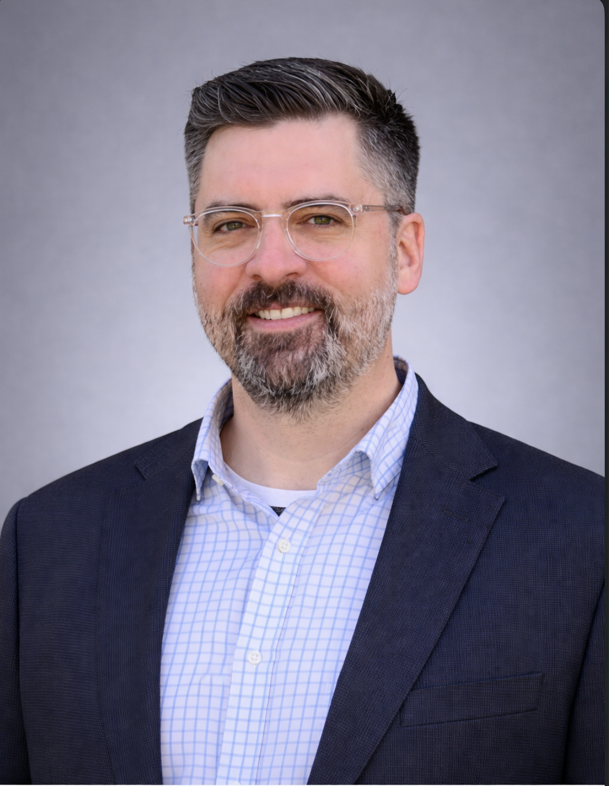

A reconstructed working copy of the Teleo Title team page with headshots and names.
Jesica Green-Cargill
Branch Manager & Senior Escrow Officer
Expected file: images/jesica-headshot.jpeg
Jesica Green-Cargill
Branch Manager & Senior Escrow Officer
Jesica brings over 20 years of experience in the Texas title industry, with a strong background in residential and commercial escrow. She has supported branch launches, managed high-volume pipelines, and built lasting relationships with realtors, lenders, builders, and investors. Recruited by Fidelity National Title to help open a new Pasadena branch, she played a key role in establishing operations and maintaining strong production. Known for her ability to keep complex transactions on track and avoid last-minute surprises, she brings steady execution to every file. Now based in the Georgetown area, Jesica brings proven performance and a strong local presence to Teleo Title, reinforcing the quality and reliability behind every closing.

Blake Teipel, Ph.D.
Managing Partner
Blake Teipel, Ph.D.
Managing Partner
Blake is a seasoned executive and three-time founder with deep experience building and guiding organizations through growth. At Teleo Title, he provides executive leadership and strategic direction, ensuring the company remains focused on service, clarity, and long-term reliability while supporting the team with the resources and structure needed to succeed.
"Real estate closings should be secure, seamless, and modern. We're building Teleo Title with the experts who know this business best."
Don Ness
Managing Partner
Expected file: images/donald-headshot.png
Don Ness
Managing Partner
Don is a veteran software engineer with 20 years of experience across enterprise systems, startups, and a decade running his own consultancy. Through Abode Labs, he leads technology and product for Teleo Title, building tools that support accuracy and reliable service. He lives in Georgetown with his wife and four children.
"Title work depends on judgment, coordination, and timing. Software should support those moments, not distract from them, so professionals can focus on the decisions that matter."